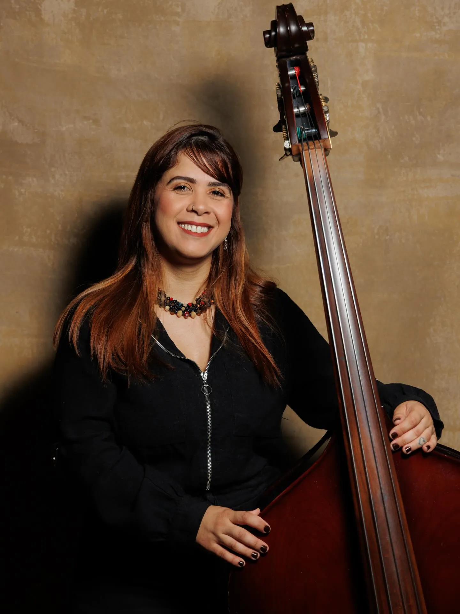
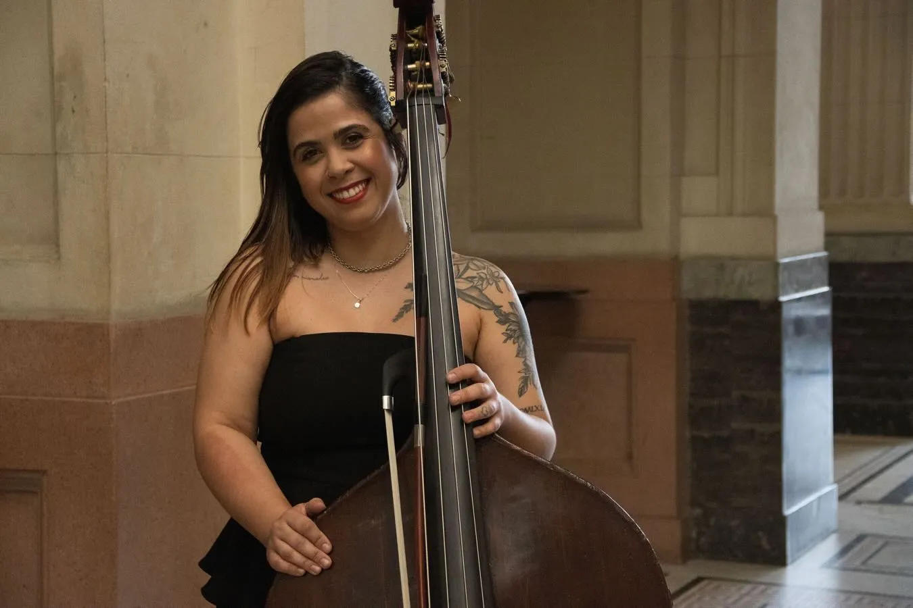
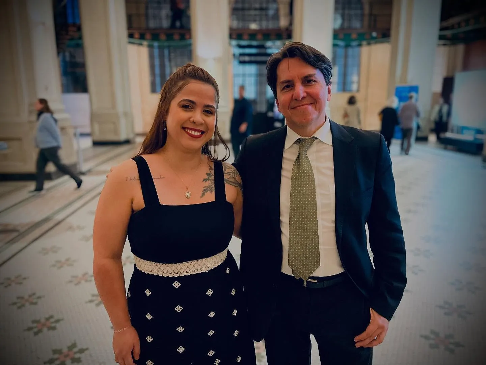
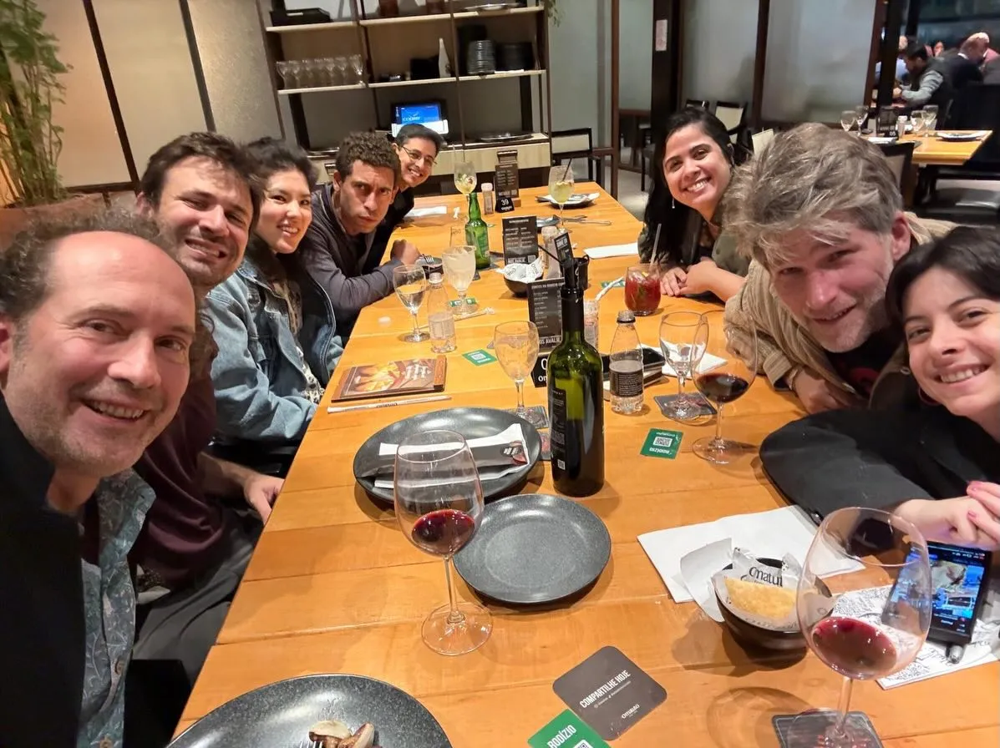
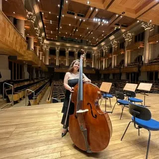

Contrabaixista Orquestra Sinfônica do ParanáOSP
- Academia de Música da Osesp
- Orquestra Sinfônica do Paraná
- Quarteto Topázio (gravação)
“Com solos suaves”
Jornal do Brasil · Dicas do Aquiles · set/2026Sobre o contrabaixo de Gabriela no Carnavalito, no álbum de João Marcondes. Ler a matéria [conferir o trecho no original]
Sobre

Contrabaixista brasileira, integra a Orquestra Sinfônica do Paraná, em Curitiba [confirmar a data de entrada]. Formou-se na Academia de Música da Osesp, em São Paulo, entre 2023 e 2025 [confirmar as datas], e estreou como academista na Sala São Paulo, ao lado do naipe de contrabaixos da orquestra.
Divide o palco também com a música de câmara, em duos, quartetos e festivais. Gravou o repertório latino-americano de João Marcondes com o Quarteto Topázio, como quinta integrante, num álbum lançado em 2026 [confirmar títulos e datas].
Ouça e assista
Suíte Latino-Americana n.º 1Op. 90 · Menções Pitorescas, Op. 91
João Marcondes · Quarteto Topázio
Capa ilustrativa [pedir a capa oficial à Azul Music]
Suíte Latino-Americana n.º 1, Op. 90 Menções Pitorescas, Op. 91
João Marcondes · Azul Music · Quarteto Topázio, com Gabriela Negri como quinta integrante.
- Tango
- Choro
- Canção de Cuna
- Bambuco
- Carnavalito
- Bolero
Ficha · Leandro Dias e Anderson Farinell, violinos · André Rodrigues, viola · Marialbi Trisolio, violoncelo · Gabriela Negri, contrabaixo. Gravação, mixagem e master de Adonias Junior, Estúdio Arsis. [confirmar a ficha]
Vídeos
Três registros de palco. Cada um abre no Instagram.
Trajetória
Os marcos de 2019 a 2026, escritos na pauta do contrabaixo, em clave de fá.
- abr/2019
Primeira apresentação registrada
Teatro L'Occitane - set/2023
Primeiro concerto como academista da Osesp
Sala São Paulo, ao lado do professor e do naipe de contrabaixos - 2023 a 2025
Dois anos na Academia de Música da Osesp
São Paulo
- mai/2025
Concerto de Dittersdorf, 1º movimento
Com o pianista Victor Pompermayer, na preparação para a última simulada da Academia · Sala São Paulo - jun/2025
Duo de Rossini, para violoncelo e contrabaixo
Com o violoncelista Kim Bak Dinitzen · Sala São Paulo - jun/2025
Concertos com a Orquestra Sinfônica do Paraná
Regência de Roberto Tibiriçá · Teatro Guaíra, Curitiba
- ago/2025
Valsa Miniatura, de Koussevitzky
Com a pianista Luciana Gastaldi - set/2025
Fim do ciclo na Academia da Osesp
Sala São Paulo, com gratidão aos mestres e colegas - nov/2025
São Paulo Chamber Festival
Teatro Cultura Artística
- dez/2025
Foto oficial do primeiro ano na Orquestra Sinfônica do Paraná
Curitiba - dez/2025
Gravação com o Quarteto Topázio
Estúdio Arsis - jun/2026
Festival Internacional Watari
Semana de música de câmara, Sala Watari, Campinas [confirmar como citar os professores] - jun/2026
Lançamento do álbum, pela Azul Music
Suíte Latino-Americana, Op. 90, e Menções Pitorescas, Op. 91 · streaming
[confirmar com a Gabriela as datas e os títulos da linha do tempo]
Palcos
Formação e mestres
Dois anos na Academia de Música da Osesp (2023 a 2025) [confirmar as datas], estudando e tocando com o naipe de contrabaixos da orquestra, na Sala São Paulo.
Ela sempre agradece aos mestres e aos colegas de naipe.
[confirmar com ela como citar os demais professores e colegas]

Repertório
- Gioachino RossiniDuo para violoncelo e contrabaixo
- Carl Ditters von DittersdorfConcerto para contrabaixo1º movimento
- Serge KoussevitzkyValsa Miniatura
- João MarcondesSuíte Latino-Americana n.º 1, Op. 90e Menções Pitorescas, Op. 91, com o Quarteto Topázio
- Repertório sinfônicoOsesp e Orquestra Sinfônica do Paraná[listar as obras com ela]
Bastidores


“Frase dela, leve”[a confirmar com a Gabriela]
Agenda
Contato
Concertos, recitais e gravações.
- @negribass_
- Cidades
- Curitiba e São Paulo